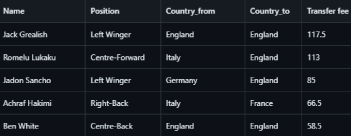
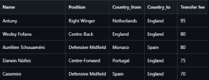

Data Science and Data Visualization
We have created a website as a dashboard to show the data in summer football transfer in two year (2021,2022).This website contains many diagrams to show the data visualization which the purpose to achieve the overview of each summer data tranfers .
Top 5 Players in 2021
Top 5 Players in 2022
In conclusion, after anlysing throught project, we can see that the transfer data is very important for the football clubs. It helps them to find the siutable players for each club by having a overview on the data viusalation.We can see that England is the country that spend too much money for transfer through 2 years and Netherland, Portugal have most income from selling players.